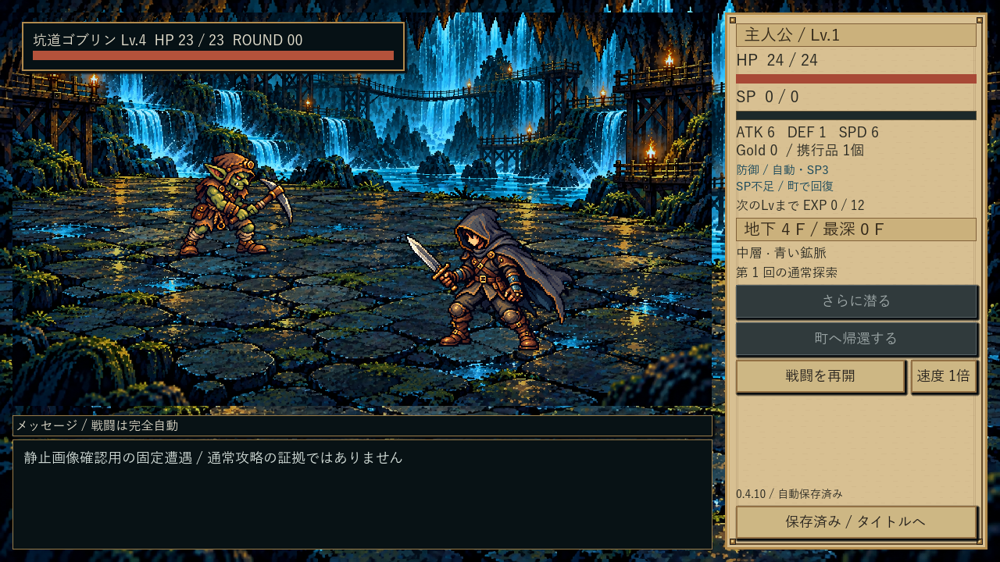
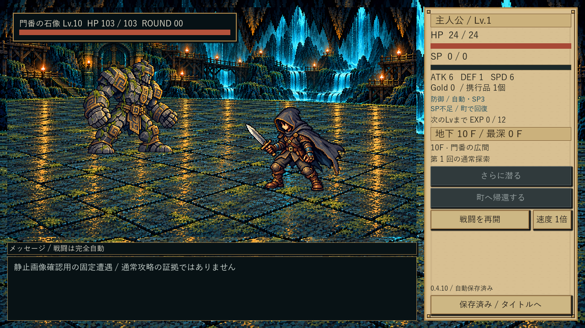
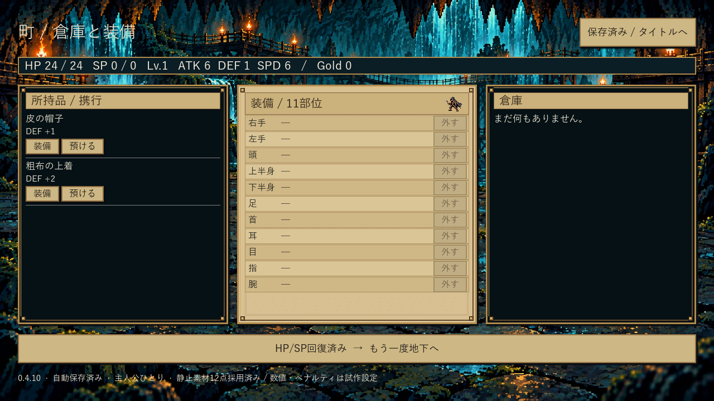

新敵3種を表示 — 開発版0.4.10
通常の起動入口は0.4.6のままです。下の画像は新しい開発版の固定遭遇による表示確認です。通常攻略の証拠とは分けています。
開発版を試すときは別セーブで「新しく始める」を選び、初回帰還→町→再探索、6〜9Fの新敵、通常死亡→再挑戦、保存後の再起動を確認できます。通常版の保存は引き継ぎません。
濡れ岩ガニ
洞窟カエル
水棲トカゲ
全身・尾・爪の見切れなし。カニの殻は高め、トカゲは尾を含む高さ制限で胴体が小さめに見えます。追加生成・美術改良は行っていません。
同じ開発版の既存敵・ボス

通常戦闘との比較
10Fボスとの比較初回帰還後の町

工程1の最終受入・人間の通常画面での実操作は未完了。表示以外の処理には既存の成功証拠を再利用しました。